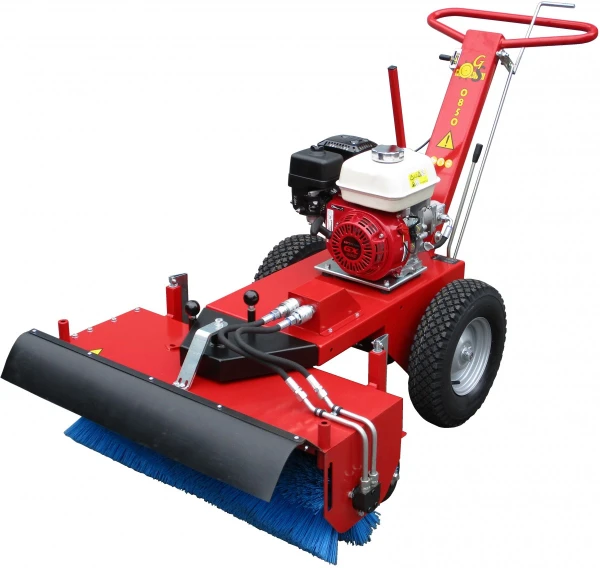
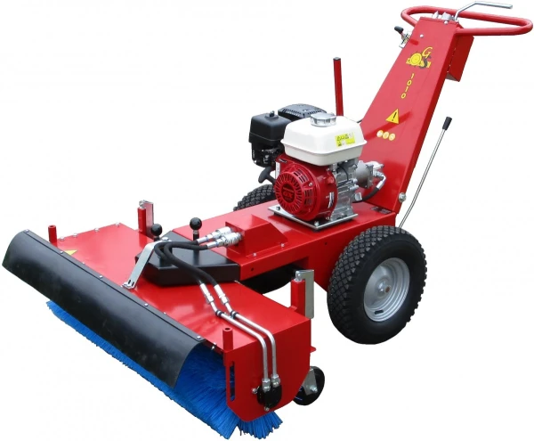
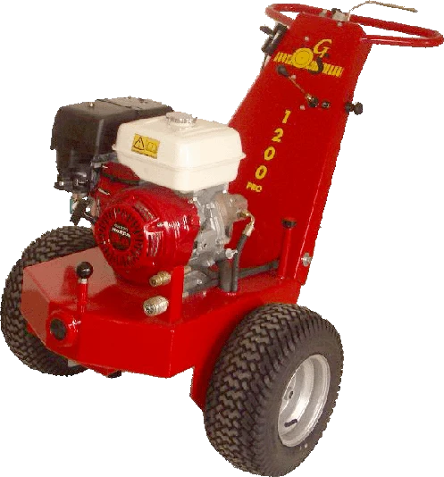
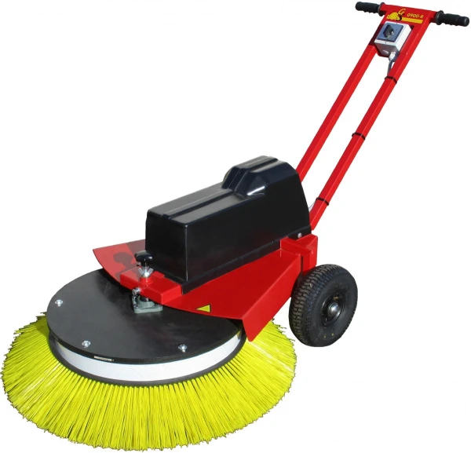
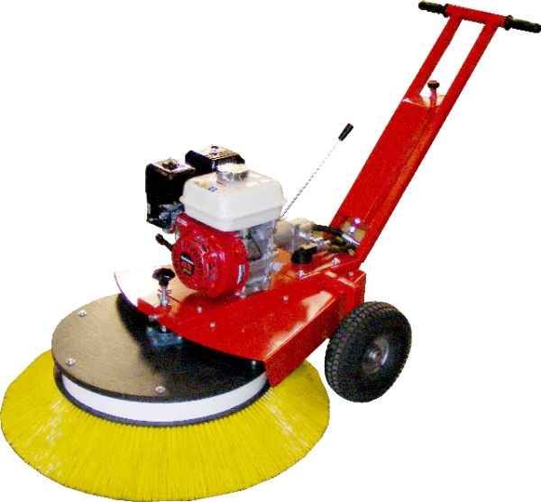
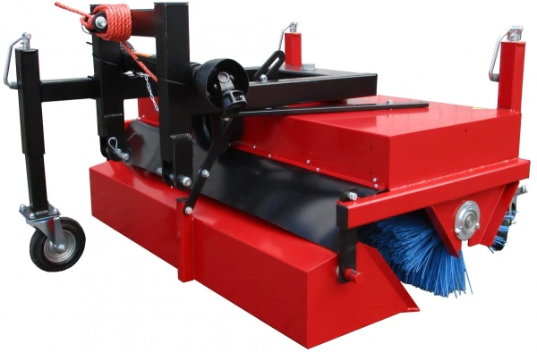
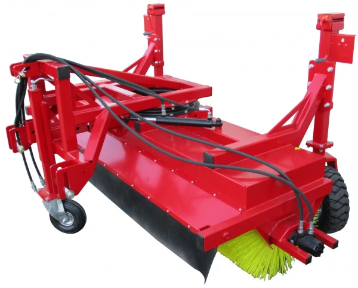
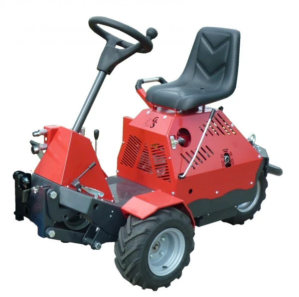
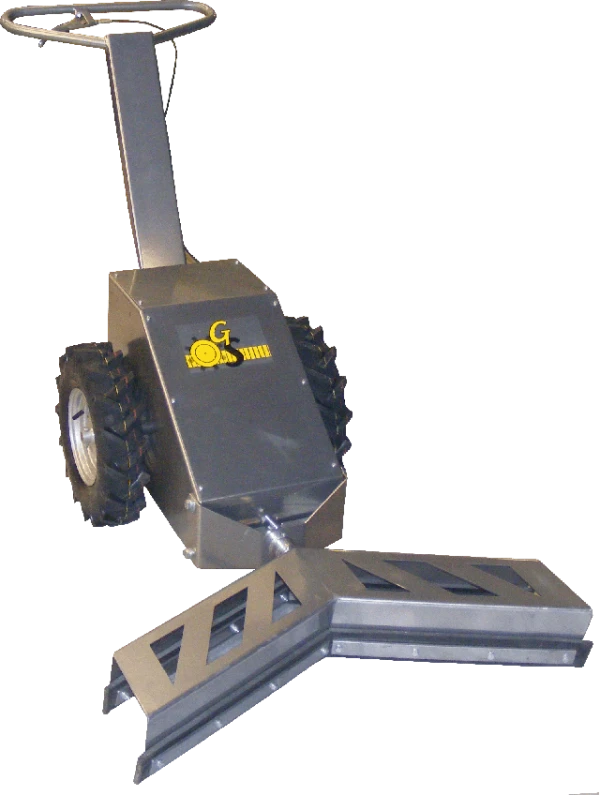
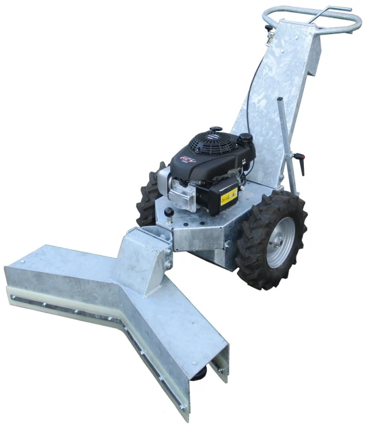

Ons assortiment
Compleet overzicht van alle GS veegmachines, mestschuifmachines, onkruidmachines en de rijbaanegaliseerder.
Compacte, krachtige vegers voor diverse toepassingen.

Axiaalveegmachine

Axiaalveegmachine

Axiaalveegmachine

Axiaalveegmachine
Wendbare vegers met radiaalborstel — electro en benzine uitvoeringen.

Radiaalveegmachine

Radiaalveegmachine

Radiaalveegmachine
Krachtige veger voor de heftruck, verreiker of shovel. In 7 werkbreedtes verkrijgbaar.
Ideaal voor het vegen van magazijnen, bedrijfshallen, parkeerplaatsen en buitenterreinen.

Vegers voor achter de trekker — van compact tot professioneel.

Trekkerveger

Trekkerveger

Trekkerveger

Trekkerveger
Trekkerveger
Comfortabel vegen vanuit de bestuurdersstoel.

Zit-veegmachine

Zit-veegmachine

Verwijdert mos, onkruid, kauwgum e.d. tussen het straatwerk.
Op basis van de succesvolle GS 0700 R veegmachine is een onkruidmachine ontworpen. De wendbaarheid en bedrijfszekerheid van de GS 0700 R wordt hierbij perfect gecombineerd met de door Gievema ontwikkelde onkruidborstel.
Robuuste machines voor het reinigen van stalgangen.

Mestschuifmachine

Mestschuifmachine

Mestschuifmachine
Ideaal voor manegehouders of paardensporters die een manegebodem te onderhouden hebben.
Een goed onderhouden manegebodem vraagt veel werk. Met de GS RBP rijbaanegaliseerder wordt het onderhoud een stuk eenvoudiger. Door zijn geringe afmetingen past hij door een doorgang van 1.25m en is het apparaat zeer overzichtelijk. Door zijn lichte gewicht is de machine bodemsparend. Door zijn hoefslagschuiver heeft u geen handwerk meer met schop of hark.

Neem vrijblijvend contact met ons op en wij helpen u graag verder.